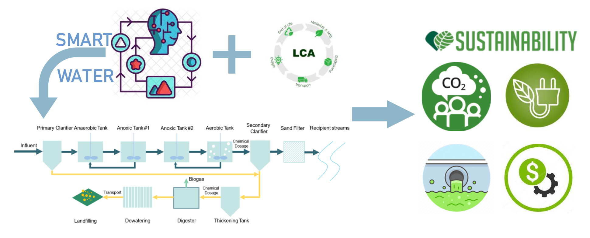

Optimal control towards sustainable wastewater treatment plants based on multi-agent reinforcement learning
Highlights
- Multi-agent reinforcement learning was firstly applied for parameters optimization.
- Reward function was designed from LCA for sustainable optimization.
- Optimization under various discharge standards and emphasis was compared.
- LCA-driven strategy showed superiority on elimination of environmental impacts.
- MADDPG holds great potential and advantages to guide the operation of WWTP.
Abstract
Wastewater treatment plants (WWTPs) are designed to eliminate pollutants and alleviate environmental pollution resulting from human activities. However, the construction and operation of WWTPs consume resources, emit greenhouse gases (GHGs) and produce residual sludge, thus require further optimization. WWTPs are complex to control and optimize because of high non-linearity and variation. This study used a novel technique, multi-agent deep reinforcement learning (MADRL), to simultaneously optimize dissolved oxygen (DO) and chemical dosage in a WWTP. The reward function was specially designed from life cycle perspective to achieve sustainable optimization. Five scenarios were considered: baseline, three different effluent quality and cost-oriented scenarios. The result shows that optimization based on LCA has lower environmental impacts compared to baseline scenario, as cost, energy consumption and greenhouse gas emissions reduce to 0.890 CNY/m3-ww, 0.530 kWh/m3-ww, 2.491 kg CO2-eq/m3-ww respectively. The cost-oriented control strategy exhibits comparable overall performance to the LCA-driven strategy since it sacrifices environmental benefits but has lower cost as 0.873 CNY/m3-ww. It is worth mentioning that the retrofitting of WWTPs based on resources should be implemented with the consideration of impact transfer. Specifically, LCA-SW scenario decreases 10 kg PO4-eq in eutrophication potential compared to the baseline within 10 days, while significantly increases other indicators. The major contributors of each indicator are identified for future study and improvement. Last, the authors discussed that novel dynamic control strategies required advanced sensors or a large amount of data, so the selection of control strategies should also consider economic and ecological conditions. In a nutshell, there are still limitations of this work and future studies are required.

Keywords
- Wastewater treatment
- Reinforcement learning
- Multi-objective optimization
- Sustainability
Link
Cite this paper
@article{chen2021optimal,
title={Optimal control towards sustainable wastewater treatment plants based on multi-agent reinforcement learning},
author={Chen, Kehua and Wang, Hongcheng and Valverde-P{\'e}rez, Borja and Zhai, Siyuan and Vezzaro, Luca and Wang, Aijie},
journal={Chemosphere},
volume={279},
pages={130498},
year={2021},
publisher={Elsevier}
}